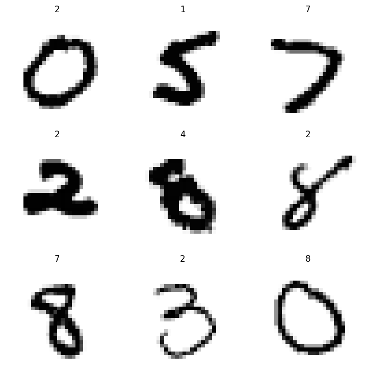

from similarity_learning.all import *Evasion
Attacks against classification models that construct special inputs (a.k.a AEs- adversarial examples) that appear natural to a human but are misclassified by the model
While other implementations of AE attacks exist, this one is meant to be as easy, accessible, informative and modular as training model. In fact, this implementation uses fastai’s Learner class, and inherits its functionality, such as the progress bar, the losses table, and even early stopping and lr scheduling.
API
PGDCallback
PGDCallback (epsilon=0.3, rand_init=True)
Implementes Projected Gradient Descent by bounding some \(l_p\) norm of the perturbation
PGDCallback.rand_init
PGDCallback.rand_init (shape)
Initialize a random perturbation in the \(\epsilon\)-ball
PGDCallback.steepest_descent
PGDCallback.steepest_descent ()
Edit the perturbation’s gradient to implement steepest descent
PGDCallback.project_pert
PGDCallback.project_pert ()
Project the perturbation to the \(\epsilon\)-ball
In order to demonstrate the attacks, let’s first setup training data and an accurate classifier:
mnist = MNIST()
classifier = MLP(10)
learn = Learner(mnist.dls(), classifier, metrics=accuracy)
learn.fit_one_cycle(1)| epoch | train_loss | valid_loss | accuracy | time |
|---|---|---|---|---|
| 0 | 0.105063 | 0.093810 | 0.971000 | 00:18 |
sub_dsets = mnist.valid.random_sub_dsets(64)acc = learn.validate(dl=sub_dsets.dl())[1]
test(acc, .9, ge)For reference, here is what the original input look like:
learn.show_results(shuffle=False, dl=sub_dsets.dl())This is enough for an untargeted attack, where we want to make AEs that the classifier misclassifies. In a targeted attack, we require the AEs to be classified as specific classes. To demonstrate that, we’ll construct a version of the data with random labels:
item2target = {item: str(random.choice(range(10))) for item in sub_dsets.items}
random_targets = TfmdLists(sub_dsets.items, [item2target.__getitem__, Categorize()])
random_targets_dsets = Datasets(tls=[sub_dsets.tls[0], random_targets])
random_targets_dsets.dl().show_batch()
Since a targeted attack adds an additional requirement from the perturbation, we should use a bigger epsilon and more iterations.
\(l_\infty\) Norm
LinfPGD
LinfPGD (epsilon=0.3, rand_init=True)
Implements PGD by bounding the \(l_\infty\) norm
Untargeted
attack = InputOptimizer(classifier, LinfPGD(epsilon=.15), n_epochs=10, epoch_size=20)
perturbed_dsets = attack.perturb(sub_dsets)| epoch | train_loss | time |
|---|---|---|
| 0 | -3.317830 | 00:00 |
| 1 | -6.035948 | 00:00 |
| 2 | -7.208374 | 00:00 |
| 3 | -7.782593 | 00:00 |
| 4 | -8.100239 | 00:00 |
| 5 | -8.288338 | 00:00 |
| 6 | -8.405439 | 00:00 |
| 7 | -8.480438 | 00:00 |
| 8 | -8.529491 | 00:00 |
| 9 | -8.561683 | 00:00 |
acc = learn.validate(dl=TfmdDL(perturbed_dsets))[1]
test(acc, .1, le)learn.show_results(shuffle=False, dl=TfmdDL(perturbed_dsets))Targeted
attack = InputOptimizer(classifier, LinfPGD(epsilon=.2), targeted=True, n_epochs=10, epoch_size=30)
perturbed_dsets = attack.perturb(random_targets_dsets)| epoch | train_loss | time |
|---|---|---|
| 0 | 2.587283 | 00:00 |
| 1 | 1.211362 | 00:00 |
| 2 | 0.713616 | 00:00 |
| 3 | 0.493275 | 00:00 |
| 4 | 0.380555 | 00:00 |
| 5 | 0.316781 | 00:00 |
| 6 | 0.281744 | 00:00 |
| 7 | 0.262587 | 00:00 |
| 8 | 0.252041 | 00:00 |
| 9 | 0.246094 | 00:00 |
acc = learn.validate(dl=TfmdDL(perturbed_dsets))[1]
test(acc, .9, ge)learn.show_results(shuffle=False, dl=TfmdDL(perturbed_dsets))\(l_2\) Norm
L2PGD
L2PGD (epsilon=0.3, rand_init=True)
Implements PGD by bounding the \(l_2\) norm
Untargeted
Note that the \(l_2\) norm can be up to \(\sqrt{d}\) bigger than the \(l_\infty\) norm, where \(d\) is the dimension, so we need to use a bigger epsilon to obtain similar results:
attack = InputOptimizer(classifier, L2PGD(epsilon=15), n_epochs=10)
perturbed_dsets = attack.perturb(sub_dsets)| epoch | train_loss | time |
|---|---|---|
| 0 | -3.854619 | 00:00 |
| 1 | -4.788039 | 00:00 |
| 2 | -5.098700 | 00:00 |
| 3 | -5.251333 | 00:00 |
| 4 | -5.340628 | 00:00 |
| 5 | -5.398513 | 00:00 |
| 6 | -5.437977 | 00:00 |
| 7 | -5.466318 | 00:00 |
| 8 | -5.487265 | 00:00 |
| 9 | -5.503058 | 00:00 |
acc = learn.validate(dl=TfmdDL(perturbed_dsets))[1]
test(acc, .1, le)learn.show_results(shuffle=False, dl=TfmdDL(perturbed_dsets))Targeted
attack = InputOptimizer(classifier, L2PGD(epsilon=25), targeted=True, n_epochs=10, epoch_size=20,)
perturbed_dsets = attack.perturb(random_targets_dsets)| epoch | train_loss | time |
|---|---|---|
| 0 | 1.122446 | 00:00 |
| 1 | 0.638857 | 00:00 |
| 2 | 0.481712 | 00:00 |
| 3 | 0.408478 | 00:00 |
| 4 | 0.367309 | 00:00 |
| 5 | 0.339710 | 00:00 |
| 6 | 0.323739 | 00:00 |
| 7 | 0.314110 | 00:00 |
| 8 | 0.276853 | 00:00 |
| 9 | 0.240247 | 00:00 |
acc = learn.validate(dl=TfmdDL(perturbed_dsets))[1]
test(acc, .9, ge)learn.show_results(shuffle=False, dl=TfmdDL(perturbed_dsets))